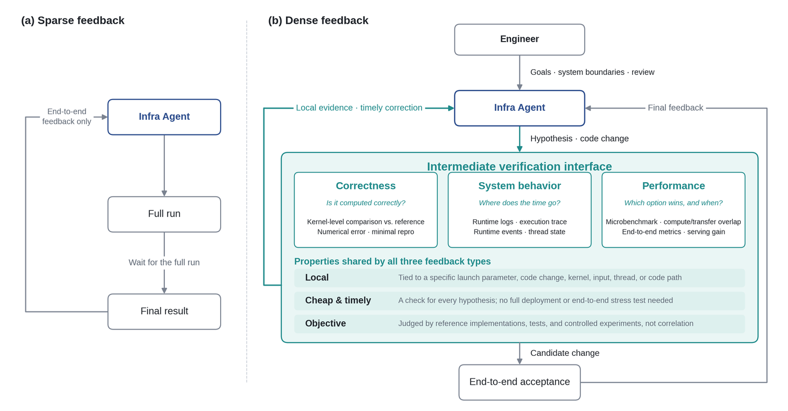
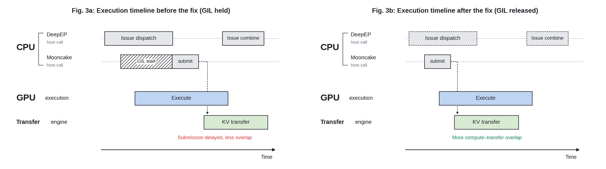

把模型从在新硬件上第一次跑通，带到能稳定承载生产流量的高性能推理服务，是一项系统工程。GLM-5.3-Flash的上线走的就是这条路：10万张以上国产加速器、100万token上下文、不到两周从适配到生产，端到端吞吐比初始基线提升3倍。
承担其中大量工作的，是跑在GLM-5.3上的Infra Agent。这篇文章讲的不是模型多会写代码，而是怎样把端到端指标变成稠密、可归因、能直接指导下一步动作的反馈，让Agent的推理能力真正转化成工程进展。
在开发GLM的过程中，模型有时会展现出让我们惊讶、甚至不安的能力。
2025年10月，我们开始研究如何强化它的网络安全能力。当时的推理很直接：网络安全是编程能力的自然延伸，一个能读懂复杂代码的模型，理应也能读懂代码里的漏洞。我们没有预料到接下来发生的事。不到一年，我们的安全合作方借助GLM在真实代码库中发现了成千上万个漏洞。模型开始重塑网络安全，同时也带来了此前并不存在的风险。为了让这项能力被负责任地使用，我们不得不设计一套可信访问机制。
最近一次让我们震动的事，来自一个更根本的变化：GLM正在越来越多地参与构建AI本身。我们看着它完成了一项过去需要一支有经验的基础设施团队花上数周才能完成的任务。当我们意识到这项工作会直接改变下一代模型的训练方式时，一个判断变得更加确信：我们的后继者，正是我们自己正在造出来的AI系统。
坦白说，在GLM-4.7之前，我们内部把GLM用于编程，多少带着一点义务感，毕竟它是我们自己的作品，而那时编程场景的产品市场契合度还没有到来。今天，GLM-5.3已经成为团队每个人不可或缺的日常编程伙伴，并且正在稳步走向替代我们。如果这个趋势延续下去，只要有足够的算力和足够的时间，它的终点就是一个能完全自主地设计并训练自己后继者的系统。这就是递归自我改进，也就是RSI。
我们还没有走到那一步，但它的早期形态已经出现。这篇文章记录的，就是其中一个早期例子。
把模型从在新硬件上第一次跑通，带到能可靠承载生产流量的高性能推理服务，是一项大型系统工程。GLM-5.3-Flash的上线走的就是这条路：我们在一个由超过10万张国产AI加速器构成的集群上，从零搭起了一套完整的生产级推理服务，GLM-5.3-Flash的全部生产推理都跑在这套系统上。
这并不容易。此前没有人以这样的规模部署过国产加速器集群。我们面对的是相对有限的显存容量与带宽，同时还要支撑一种全新的模型架构、100万token的上下文窗口，以及多模态请求。生态并不成熟，kernel支持不完整，许多本应有文档的地方只能靠猜。最终这项工作完成了，而且它并不是只靠一支基础设施工程师团队完成的：其中很大一部分工作，由基于GLM-5.3的Infra Agent承担。
后面发生的事大家已经熟悉。GLM-5.3-Flash以匿名模型名Ox-Alpha在OpenCode和OpenRouter上接受真实使用检验，上线一周内就成为两个平台上使用量最高的模型，六天处理了超过62万亿token。
我们实施了一系列激进的内存优化，其中包括用计算换带宽、用通信换显存的自研方案。最终的技术栈组合了多项关键技术：针对线性注意力与LM Head的节点内张量并行、ReplaySSM、W8A8量化、INT8/FP8/BF16混合精度缓存量化，以及Layer Split；在此之上，还引入了Encode-Prefill-Decode（EPD）分离式架构。这些优化合在一起，把端到端服务性能提升了大约3倍，硬件利用效率与单token成本都达到了与主流NVIDIA GPU相当的水平。
在Infra Agent反馈循环贯穿整个优化过程的情况下，GLM-5.3-Flash从模型适配到具备生产条件用了不到两周，端到端吞吐最终达到初始基线的3倍。图1展示了它从首次跑通到生产上线的性能轨迹。
整个过程中我们逐渐意识到，Infra Agent的工程有效性不仅取决于模型的代码生成与推理能力，更取决于系统能否持续提供可归因的有用反馈。代码库只提供静态上下文，而推理系统里的数值偏差、性能回退和优化目标未达成，往往来自多层之间的动态交互，包括kernel实现、并行策略、通信行为、内存管理和服务编排。
即便Agent能读懂整个代码库，像数值精度测试失败、TTFT上升30%、输出吞吐下降20% 这样的反馈，仍然会让它在判断哪一层该负责、当前假设为什么错、下一步该测什么时举步维艰。端到端指标能告诉Agent结果变差了，却无法解释原因。
因此，在提升Agent写代码、改代码能力的同时，我们还要解决一个更根本的系统问题：如何把稀疏的端到端结果，转化为细粒度、可归因、能直接指导下一步行动的工程反馈？这也是为Infra Agent建立有效反馈闭环的关键。
传统推理系统优化从不缺测试、日志、性能分析工具和微基准，但它们通常散落在不同的工具和工程环节里。有经验的工程师会根据一次压测结果决定下一步看什么，逐步深入检查kernel输出、执行时间线、通信事件或线程状态，并把不同工具里的信息串起来。
对Agent来说，除非这些观察与验证手段被组织成可直接调用、可重复执行的工作流，它能真正用上的反馈依然稀疏。它可能知道吞吐没达标，却仍然无法判断：
- 是某个kernel太慢，还是计算设备在空转？
- 是KV Transfer本身太慢，还是上层调度没有及时推进传输？
- 优化在哪些输入形状下有效，又在什么条件下退化？
单一端到端指标回答不了这些问题。于是我们把正确性测试、运行日志、执行trace、运行时事件、微基准和端到端指标一并纳入Agent的迭代流程，把整个系统优化过程拆成可以局部观察和验证的步骤。kernel级对比验证数值正确性；微基准测量特定输入条件下的局部性能；执行trace与运行时事件揭示计算、等待、通信之间的时序关系。Agent可以针对当前假设选择合适的验证手段，而不必每次改动后都等一次完整的服务部署和端到端压测。
我们把这套做法称为“稠密反馈”。这里的“稠密”并不是尽可能多地把日志和指标灌给Agent，而是强调三个特征。
第一，反馈要足够局部。 尽可能把它绑定到具体的引擎启动参数、代码改动、kernel、输入条件、线程、执行区间或代码路径上，帮助Agent缩小问题范围。比如，与其报告某次融合优化后模型精度下降，不如指出某个具体请求在改动前后的输出差异，这能让Agent更有依据地构造最小复现并分析原因。
第二，反馈要低廉、及时可得。 每当Agent提出假设、做出改动、构造一组对照实验时，都应该有合适的验证方式。能用一个kernel测试或本地微基准回答的问题，不该每次都要求完整的服务部署和端到端压测。验证周期越短，Agent就能越快纠偏，少在无效假设上浪费精力。
第三，反馈要支持客观验证。 一项改动是否正确、性能是否提升，应当由参考实现、测试结果和可比的实验指标来判定。运行时信号能帮Agent找到可能的原因，但仅凭观察之间的相关性无法确定根因，仍然需要对照实验来验证改动某条路径是否产生了预期效果。
这三点合在一起，决定了反馈是否可执行。正确性反馈回答“计算对不对”，系统行为反馈指出“时间花在哪”，性能反馈判断“哪种做法更好、在什么条件下更好”。验证手段不必遵循固定顺序，而应与当前假设相匹配，让每一次实验都回答一个具体问题。
局部验证与端到端测试在这个过程中承担不同角色。前者尽早排除错误或无效的改动，筛选出值得继续推进的候选；后者确认局部收益能否转化为真实的服务提升，以及一项改动是否会在真实负载下引入新的回退。
基于这些原则，GLM-5.3-Flash的上线过程建立了一个由工程师、Infra Agent和实验环境共同参与的优化闭环。工程师定义目标与系统边界；Agent负责分析、提出假设、修改代码；实验环境提供分层、及时、可验证的反馈。三者一起，把过去依赖工程师经验串联的诊断过程，变成了Agent可以持续执行的工程流程。

推理性能优化必须以数值正确性为前提。对Agent来说，验证的起点是弄清推理引擎究竟做了哪些计算。高层的并行策略会改变kernel输入的切分方式、走哪条执行路径以及结果如何合并。只在未切分条件下测试kernel输出，不足以覆盖它在真实部署中的行为。
为此，我们建立了从推理引擎并行策略到kernel实现的映射，把系统级的部署配置转换成Agent可以逐个验证的kernel级任务。这个映射帮助Agent弄清：某种并行配置涉及哪些kernel、输入如何切分、哪些计算路径需要与未切分实现做对比。
在此基础上，我们让Agent对比不同切分与未切分执行路径的数值精度。对相同输入，在统一计算语义和输出位置之后，检查不同执行方式的结果是否满足数值误差容限。这样就把并行配置、kernel路径和观测到的误差串在一起。一旦测试暴露出差异，Agent就可以顺着对应的切分方案和计算路径继续排查，而不必从整个模型层面重新开始诊断。
正是在这次kernel验证过程中，我们发现了KDA kernel在上下文并行（CP）路径上的数值精度问题。CP与非CP结果的差异，把调查方向指向了并行执行引入的状态传播与合并计算。
CP切分需要合并来自不同上下文分片的状态，其核心计算可以简化如下：
M = tl.dot(M_chunk, M) # Merge state transformations across shards
S_next = tl.dot(M, S) + H # Update the initial state for the next shard在原始实现中，即使输入是FP32，tl.dot出于性能考虑也默认使用TF32计算。这种更低的计算精度会让误差在变换合并与状态更新过程中累积，并随上下文变长而更加明显。
修复方式是给这两处运算显式设置input_precision="tf32x3"。它把三次TF32 Tensor Core运算组合成一个更高精度的结果，在尽量保留Tensor Core性能优势的同时降低累积误差。
在这个案例里，反馈环境在问题暴露之前就已经开始起作用。从并行策略到kernel的映射定义了该测什么；切分与未切分路径的对比暴露出数值差异；对计算精度的分析解释了差异来源；回归测试则为验证改动提供了持续依据。对Agent而言，这套流程把系统级的并行设计变成了可执行、可追溯的正确性任务。局部验证之后，候选实现仍需回到目标部署，做模型级精度与服务性能的最终验收测试。
这些数值精度修复已经合并进Flash Linear Attention上游，详见PR #1180。
对系统级性能问题来说，清晰的测试场景和性能约束，能给Agent一个发现异常、选择分析方向的起点。
我们的推理优化工程师为Agent定义了测试场景，包括仅Prefill、Prefill + KV Transfer、仅Decode，用来隔离不同执行阶段及其组合的性能影响。他们还为每个场景设定了验收标准，例如在相同负载下，Prefill + KV Transfer与仅Prefill基线的性能差距不应超过5%。
然而Agent发现，在某些场景中性能差距超过了20%。这条反馈把调查范围收窄到KV Transfer引入的额外开销与并发交互。Agent随后详细检查了KV Transfer的时间线，并发现一个异常：在这些场景中，Python侧的KV Transfer执行从未与DeepEP的dispatch/combine调用区间重叠。
这一现象促使Agent去调查DeepEP与Mooncake Transfer之间的并发，沿着调用链一路追到Python/C++ 边界。在我们使用的DeepEP v1.2.1中，intranode_dispatch与intranode_combine都没有显式释放Python GIL。此外，当dispatch需要已接收token的数量时，它会在CPU上等待GPU返回该信息。
关键在于，进入C++ 并不会自动释放GIL。这些调用持有锁期间，同一进程里负责Mooncake Transfer的Python线程无法及时拿到GIL，传输任务的调度与提交因此被延迟，KV Transfer与后续计算重叠的机会随之减少。即便底层传输机制支持异步执行，上层提交被阻塞，也会让预期的并行无法充分体现。
源码本身还提供了一个直接对照：同一版本里的internode_dispatch已经显式释放了GIL，并附有注释说明这样做是为了避免CPU等待期间阻塞其他线程中的KV Transfer。这进一步支持了Agent对节点内路径的判断。
关键修复是在相关C++ 执行区间释放GIL，让Mooncake Transfer的Python线程能及时推进任务。修复必须同时用时间线和最初的性能约束来验证：前者检查调度与传输是否获得了与计算重叠的机会，后者判断这项改动是否真的提升了服务性能。在相同测试条件下，修复后Prefill + KV Transfer与仅Prefill的性能差距降到了1% 以下。
在这个案例里，性能约束先把“不达标”变成了定义清晰的测试差异；时间线随后把调查收窄到两个组件之间的并发；代码分析最后精确定位到GIL被持有的范围。稠密反馈把端到端性能、跨层运行时行为和一处具体实现细节串了起来，为Agent分析的每一步都提供了证据。

kernel优化要回答两个问题：如何判断一项优化是否有效，以及去哪里找有希望的优化方向。
首先，kernel性能必须在推理引擎的真实执行环境中评估。比如，给某个计算kernel更多资源，可能缩短它自身的执行时间，却让KV Transfer kernel可用资源变少，最终拖慢整条流水线。因此Agent必须跳出单个kernel的延时，结合目标负载、资源约束、任务重叠和端到端收益来确定正确的优化目标。
其次，大量优化经验就嵌在SGLang、Flash Linear Attention、DeepGEMM等项目的手写kernel里。Agent需要从这些代码中提炼优化手法及其适用条件，为当前kernel和目标硬件提出候选方案，再用实验验证实际效果。现有代码提供优化方向，系统反馈决定这些优化在实践中是否站得住。
我们让基于GLM-5.3的Infra Agent从不同代码库、编程语言和硬件平台的既有kernel中学习优化手法，并通过增量实验与消融实验，把这些手法提炼成包含适用条件、变换方法、资源约束和验证证据的“优化骨架”。面对新kernel时，Agent从这些骨架出发，再用profiling和分层测试重新评估分块、访存和资源分配策略。经过验证的改动及其适用条件会回流到骨架库。工程师主要负责定义目标与约束，并审核涉及数值语义、并发行为和生产风险的关键改动。

图4展示了一个代表性KDA Decode kernel的性能演进。引入ReplaySSM用计算换内存，带来了第一次kernel执行时间的上升（v0到v1）。随后Agent的分割优化把v1的执行时间降低了9.6%。接着，在收到计算是主要瓶颈的反馈后，Infra Agent发现原始实现沿V维度切块，导致同一份FP32归一化与门控计算被重复执行了四次。它把这些块合并进同一个线程块，让共享的中间结果常驻寄存器，并用一次warp级归约替代了重复的分块计算。通过牺牲一部分并行度，它从源头上消除了冗余计算，相比v2实现了1.71倍加速。
在这个案例里，基于GLM-5.3的Infra Agent从既有实现中提炼优化经验，并把它用到了支撑自己推理的kernel上。从骨架出发，它逐个调优组件，用分层验证决定保留哪些改动，再用端到端性能确认它们的实际价值。经过验证的洞见又回流到骨架库。模型由此参与优化了自己的推理系统，而每一次部署积累的经验，又减少了下一轮优化所需的工程投入。
这三个案例共同说明，反馈的价值不在于数量，而在于它能否帮助Agent回答眼前的问题。大量非结构化日志会淹没关键信号；覆盖不完整的profiling会导致错误归因；在微基准里有效的优化，未必能转化为端到端收益。因此构建反馈环境不只是提供测试、日志和性能数据，还要明确每类观察能支撑什么判断、它的边界在哪、哪些结论必须靠进一步实验来确认。
在这个过程中，工程师有三项关键职责：定义优化目标与系统约束，构建Agent能直接使用的反馈环境，审核涉及系统架构、异步并发和生产风险的关键改动。在这个框架内，Agent提出假设、实施改动、运行实验，再用反馈决定保留、修正还是放弃当前做法。正确性、稳定性和端到端性能共同构成最终验收标准。
回看GLM-5.3-Flash的上线过程，kernel里的数值精度问题、跨Python/C++ 边界的并发问题、关键kernel的性能优化，分别代表了不同层面的工程挑战。通过局部测试、跨层观察和分层基准，最初模糊的异常被逐步转化为可检验的工程假设，复杂的系统问题被拆解成一系列可观察、可用实验检验、结果可归因的迭代。正是在这个反馈闭环里，Agent的编程与推理能力转化成了可验证的工程进展。
基于GLM-5.3的Infra Agent帮助建起了推理基础设施，而由工程师与Agent共同优化的系统，又反过来支撑GLM-5.3-Flash稳定地服务用户。原文写道：“The model optimizes the system; the system runs the model.”（模型优化系统，系统跑起模型。）这项工作说明，要缩短系统工程周期，光有更强的模型能力还不够，还需要一套Agent工程闭环，让模型能持续收到反馈、检验判断、修正行动。
当然，我们还没有走到递归自我改进这一步。选择目标、划定边界、评估风险，仍然是人的责任。我们相信在很长一段时间里，这条线都应该由人守住。但那些数字（两周、3倍吞吐、10万张加速器）告诉我们：在这个边界上的进展，不会因为我们希望它慢下来就慢下来。
参考：https://z.ai/blog/glm-built-its-inference-infrastructure